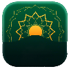

كــيوت ويب اسيمبلي بإستخدام لغة البرمجة رينج
تطبـيـــق الأذكــــار

إعداد : مـهـنـد الـعـيــاش
شكر خاص للمهندس : مـحـمـود سـمـيــر فـايـــد
JavaScript is disabled. Please enable JavaScript to use this application.